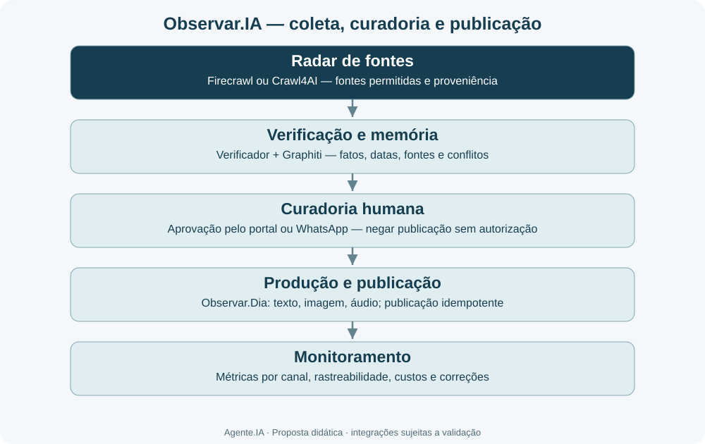
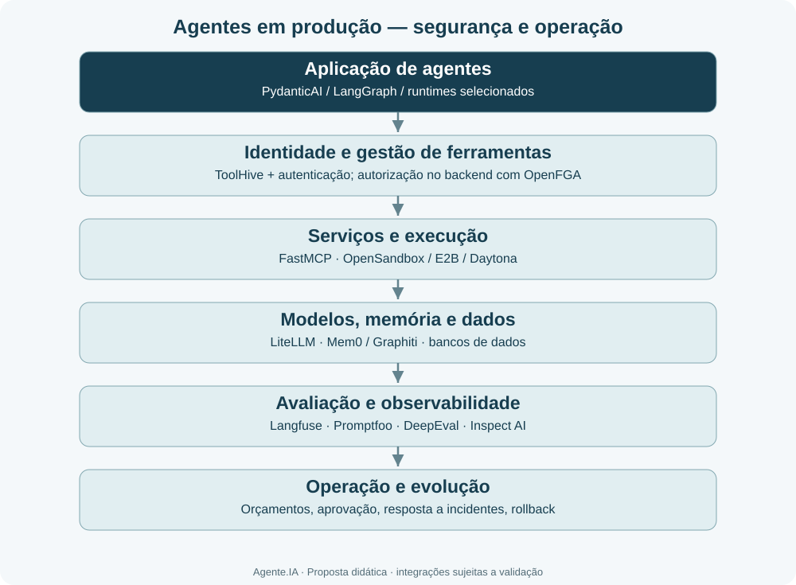

Da prototipação à produção: um percurso para construir, implantar, proteger e avaliar agentes. As arquiteturas são propostas, não sistemas já implantados.
1. Escritório Virtual da FCT/UNESP

Paperclip · OpenClaw · Hermes Agent · Agent Zero · ToolHive · OpenFGA · FastMCP · OpenSandbox · LiteLLM · Langfuse
OpenFGA decide permissões; o backend deve aplicar a decisão. O sandbox não é autorização e logs não substituem auditoria institucional.
FCT.IA — Equipe inicial de referência
Proposta acadêmica personalizável: DARCY coordena ANÍSIO, FREIRE, BERTHA, NISE, LOBO, FLORESTAN, CAROLINA, ADA e SANTOS. Não representa implantação ou aprovação institucional.

| Agente | Função |
|---|---|
| DARCY | Coordenação geral e planejamento institucional |
| ANÍSIO | Gestão acadêmica e legislação educacional |
| FREIRE | Ensino, graduação e formação docente |
| BERTHA | Pesquisa, inovação e oportunidades científicas |
| NISE | Extensão universitária, inclusão e ações comunitárias |
| LOBO | Ciência de dados, indicadores e apoio à decisão |
| FLORESTAN | Avaliação institucional e políticas públicas |
| CAROLINA | Comunicação, documentação e produção textual |
| ADA | Tecnologia, sistemas e automação |
| SANTOS | Planejamento territorial e relações com a sociedade |
Proposta completa, contratos, governança e configuração dos agentes
2. Observar.IA


Firecrawl · Crawl4AI · Graphiti · FastMCP · Langfuse
Preservar URL, data de coleta, hash do conteúdo, aprovação humana e identificador de publicação. Usar interfaces autorizadas e evitar duplicações.
3. Arquitetura de produção


PydanticAI · LangGraph · E2B · Daytona · Mem0 · Promptfoo · DeepEval · Inspect AI
4. Percurso de aprendizagem
- Conhecer — Definir objetivo, riscos e critérios de sucesso. PydanticAI · LangGraph
- Selecionar — Comparar alternativas e recursos necessários. Firecrawl · Crawl4AI
- Projetar — Modelar serviços, identidades e políticas. FastMCP · OpenFGA
- Implementar — Implementar estado, memória e ferramentas. Mem0 · Graphiti
- Implantar — Isolar a execução e configurar serviços. ToolHive · OpenSandbox
- Executar — Executar casos sintéticos e registrar resultados. E2B · Daytona
- Monitorar — Acompanhar custos, latência e falhas. LiteLLM · Langfuse
- Avaliar — Executar regressão e testes negativos. Promptfoo · DeepEval · Inspect AI
- Evoluir — Revisar configuração, rollback e evidências. LangGraph
5. Laboratórios e fichas
- Firecrawl — protocolo
- Crawl4AI — protocolo
- OpenSandbox — protocolo
- FastMCP — protocolo
- ToolHive — protocolo
- OpenFGA — protocolo
- Stripe Link CLI — protocolo
6. Critérios de liberação
Testes funcionais e negativos; identidade e autorização por operação; dados sintéticos; lista de destinos permitidos; segredos fora dos logs; orçamento e timeout; recuperação após falha; aprovação e rollback; registro de versões e evidências. Não liberar produção institucional até validar os controles.
Inspiração editorial: 20 open source projects for AI agents in production. Acesso integral ao artigo não confirmado; fichas fundamentadas nas referências oficiais indicadas individualmente.
Observar.IA — equipe de referência
TURING e onze especialistas: coleta, investigação, análise, curadoria, memória, editorial, tendências, multimídia, distribuição, métricas e segurança. Consultar proposta detalhada e configuração.